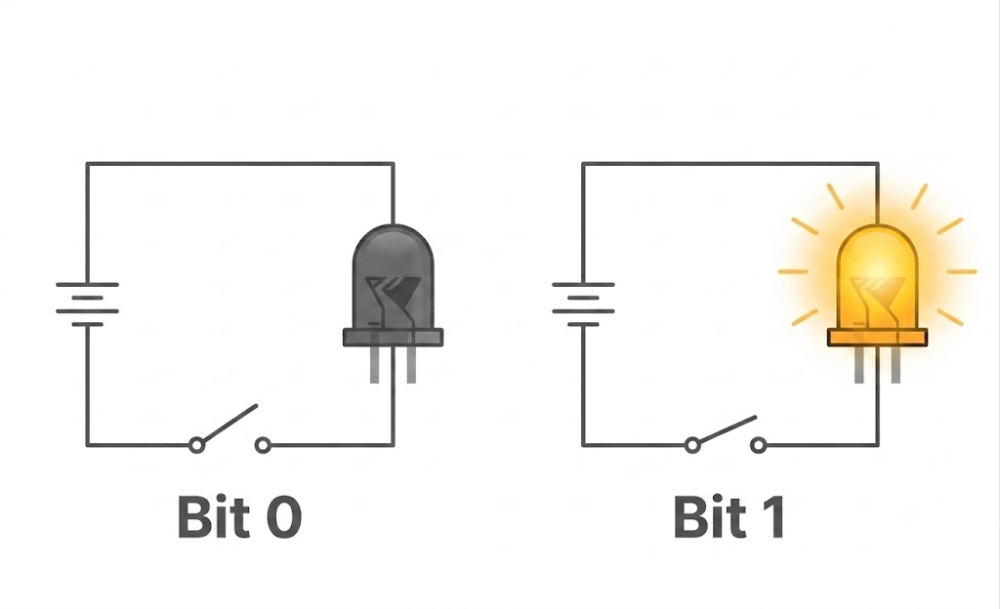
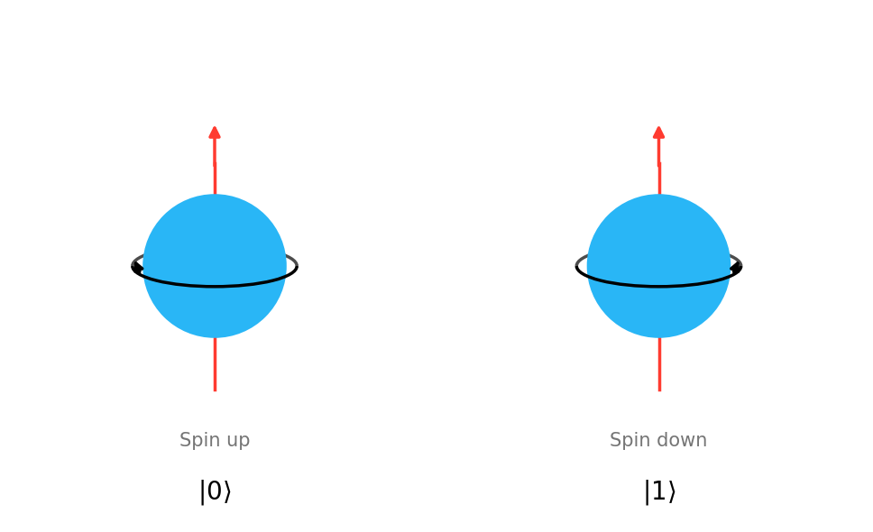
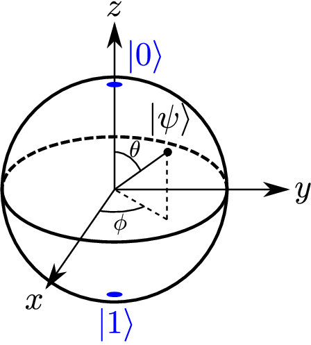

Alief Hisyam Al Hasany MR
NRP: 5001221098
Departemen Fisika, FSAD ITS
2026-07-03
Istilah Quantum Bit berasal dari gabungan kata Quantum dan Bit.
| Bit | Qubit | |
|---|---|---|
|
\[0\]
|
\[\longrightarrow\]
|
\[|0\rangle\]
|
|
\[1\]
|
\[\longrightarrow\]
|
\[|1\rangle\]
|
Bit

Qubit

Qubit memiliki sifat unik yang berasal dari mekanika Kuantum, yaitu kemampuan untuk berada di dalam kondisi Superposisi.
Qubit memiliki sifat unik yang berasal dari mekanika Kuantum, yaitu kemampuan untuk berada di dalam kondisi Superposisi.
| Sifat Bit | Sifat Qubit | |
|---|---|---|
|
0 atau 1
|
\[\longrightarrow\]
|
\[|\psi\rangle = \alpha|0\rangle + \beta|1\rangle\]
|
Vektor Kolom
\[|0\rangle = \begin{pmatrix} 1 \\ 0 \end{pmatrix}, \quad |1\rangle = \begin{pmatrix} 0 \\ 1 \end{pmatrix}\]
\[\begin{aligned} |\psi\rangle &= \alpha|0\rangle + \beta|1\rangle \\ &= \alpha \begin{pmatrix} 1 \\ 0 \end{pmatrix} + \beta \begin{pmatrix} 0 \\ 1 \end{pmatrix} = \begin{pmatrix} \alpha \\ \beta \end{pmatrix} \end{aligned}\]
Syarat Normalisasi
\[\langle\psi| = \begin{pmatrix} \alpha^* & \beta^* \end{pmatrix}\]
\[\begin{aligned} \langle\psi|\psi\rangle &= \begin{pmatrix} \alpha^* & \beta^* \end{pmatrix} \begin{pmatrix} \alpha \\ \beta \end{pmatrix} = 1 \\ &= \alpha^*\alpha + \beta^*\beta = 1 \\ &= |\alpha|^2 + |\beta|^2 = 1 \end{aligned}\]
Representasi Keadaan dalam Bola Bloch
\[ |\psi\rangle = \cos\left(\frac{\theta}{2}\right)|0\rangle + e^{i\phi}\sin\left(\frac{\theta}{2}\right)|1\rangle \]
\[\begin{align} & 0 \le \theta \le \pi \\ & 0 \le \phi < 2\pi \\ \end{align}\]
Diagram Bola Bloch

Bagaimana keadaan basis gabungan terbentuk dari ruang vektor individual:
Representasi 2 Basis Gabungan
\[|01\rangle = |0\rangle \otimes |1\rangle = \begin{pmatrix} 1 \\ 0 \end{pmatrix} \otimes \begin{pmatrix} 0 \\ 1 \end{pmatrix} = \begin{pmatrix} 0 \\ 1 \\ 0 \\ 0 \end{pmatrix}\]
Representasi 4 Basis Gabungan
\[|00\rangle = \begin{pmatrix} 1 \\ 0 \\ 0 \\ 0 \end{pmatrix} \quad |01\rangle = \begin{pmatrix} 0 \\ 1 \\ 0 \\ 0 \end{pmatrix}\]
Sistem 2-Qubit
\[|\psi\rangle = \sum_{i,j \in \{0,1\}} \alpha_{ij}|ij\rangle \rightarrow \sum_{i,j} |\alpha_{ij}|^2 = 1\]
Sistem 3-Qubit
\[|\psi\rangle = \sum_{i,j,k \in \{0,1\}} \alpha_{ijk}|ijk\rangle \rightarrow \sum_{i,j,k} |\alpha_{ijk}|^2 = 1\]
Secara matematis, keadaan kuantum gabungan \(|\Psi\rangle\) dikatakan terbelit jika ia tidak dapat didekomposisi menjadi perkalian Kronecker (\(\otimes\)) dari keadaan masing-masing qubit penyusunnya. Pada bentuk 2-Qubit
Keadaan Terpisahkan (Separable State)
State yang dapat ditulis sebagai hasil kali langsung:
\[|\Psi\rangle = |\psi_A\rangle \otimes |\psi_B\rangle\]
Keadaan Terbelit (Entangled State)
State yang melanggar kondisi faktorisasi:
\[|\Psi\rangle \neq |\psi_A\rangle \otimes |\psi_B\rangle\]
Contoh keterbelitan state Bell:
\[|\Phi^+\rangle = \frac{|00\rangle+|11\rangle}{\sqrt2}\]
Misalkan state tersebut diasumsikan bersifat separable:
\[|\Phi^+\rangle = |\psi_A\rangle \otimes |\psi_B\rangle\]
dengan definisi keadaan masing-masing qubit adalah:
\[|\psi_A\rangle = a|0\rangle+b|1\rangle\] \[|\psi_B\rangle = c|0\rangle+d|1\rangle\] diperoleh sistem persamaan \[\begin{aligned} ac &= \frac1{\sqrt2}, ad = 0\\ bc &= 0,bd = \frac1{\sqrt2} \end{aligned}\]
Kontradiksi nilai di atas menunjukkan bahwa sistem persamaan ini: \[\boxed{\textbf{Tidak memiliki solusi}}\]
Dari hasil pengujian matematis di atas, terbukti secara formal bahwa:
\[|\Phi^+\rangle \neq |\psi_A\rangle \otimes |\psi_B\rangle\]
Karena tidak dapat dinyatakan sebagai hasil perkalian tensor dari masing-masing keadaan penyusunnya, maka Bell State merupakan salah satu bentuk Entangled State (Keadaan Terbelit) yang murni.
Pada sistem 3-qubit, terdapat dua kelas keterbelitan maksimal yang secara topologi berbeda dan tidak dapat diubah satu sama lain via operasi uniter lokal dan komunikasi klasik (LOCC):
1. Keadaan GHZ (Greenberger-Horne-Zeilinger)
Superposisi dari dua keadaan ekstrem:
\[|GHZ\rangle = \frac{1}{\sqrt{2}}(|000\rangle + |111\rangle)\]
2. Keadaan W (W-State)
Superposisi dari semua permutasi satu eksitasi:
\[|W\rangle = \frac{1}{\sqrt{3}}(|100\rangle + |010\rangle + |001\rangle)\]
Sebelum masuk ke Grup Lie (kontinu), sebuah himpunan \(G\) dengan operasi biner \(*\) harus memenuhi aksioma formal grup:
4 Aksioma Utama Grup \((G, *)\)
Grup Diskrit
Contoh grup diskrit terhadap operasi perkalian bilangan kompleks.
\[\mu_4 = \{1, i, -1, -i\}\]
\[\mu_2 = \{1, -1\}\]
Terlihat bahwa:
\[\mu_2 \subset \mu_4 \iff \{1, -1\} \subset \{1, i, -1, -i\}\]
Operasi pada sistem kuantum merupakan transformasi kontinu yang dimodelkan oleh Grup Lie, sedangkan arah transformasi infinitesimalnya dijelaskan oleh generator pada aljabar Lie.
Setiap elemen Grup Lie dapat dinyatakan sebagai
\[U(\theta_1,\theta_2,\ldots,\theta_n) = \exp\!\left( -i\sum_{k}\theta_k G_k \right),\]
Generator-generator memenuhi relasi al-jabar :
\[[G_i,G_j] = G_iG_j-G_jG_i = \sum_k c_{ij}^{\,k}G_k,\]
dengan \(c_{ij}^{\,k}\) merupakan konstanta struktur (structure constants).
\[\boxed{OO^T = I}\]
\[O = \begin{pmatrix} a_{11} & a_{12} \\ a_{21} & a_{22} \end{pmatrix}\]
\[\Downarrow \boxed{OO^T = I}\]
\[\underbrace{O = \begin{pmatrix} \cos\alpha & \sin\alpha \\ -\sin\alpha & \cos\alpha \end{pmatrix}}_{O(2)} \xrightarrow{\det O = 1} \underbrace{O = \begin{pmatrix} \cos\alpha & \sin\alpha \\ -\sin\alpha & \cos\alpha \end{pmatrix} }_{SO(2)}\]
\[\Downarrow \boxed{\text{dalam bentuk eksponensial}}\]
\[O(\alpha) = e^{\alpha G}, \quad G = \begin{pmatrix} 0 & -1 \\ 1 & 0 \end{pmatrix}\]
untuk dimensi lebih tinggi, misal \(3\times 3\), maka matriks rotasi dapat dinyatakan sebagai rotasi pada bidang-bidang tertentu, misal:
\[O_{12}(\phi) = \begin{pmatrix} \cos\phi & \sin\phi & 0 \\ -\sin\phi & \cos\phi & 0 \\ 0 & 0 & 1 \end{pmatrix} \] dengan generator \[ G_{12} = \begin{pmatrix} 0 & 1 & 0 \\ -1 & 0 & 0 \\ 0 & 0 & 0 \end{pmatrix}\]
\[O_{13}(\theta) = \begin{pmatrix} \cos\theta & 0 & \sin\theta \\ 0 & 1 & 0 \\ -\sin\theta & 0 & \cos\theta \end{pmatrix} \] dengan generator \[ G_{13} = \begin{pmatrix} 0 & 0 & 1 \\ 0 & 0 & 0 \\ -1 & 0 & 0 \end{pmatrix}\]
\[O_{23}(\psi) = \begin{pmatrix} 1 & 0 & 0 \\ 0 & \cos\psi & \sin\psi \\ 0 & -\sin\psi & \cos\psi \end{pmatrix} \] dengan generator \[ G_{23} = \begin{pmatrix} 0 & 0 & 0 \\ 0 & 0 & 1 \\ 0 & -1 & 0 \end{pmatrix}\]
\[\begin{align} O(\phi,\theta,\psi) &= O_{12}(\phi) O_{13}(\theta) O_{23}(\psi)\\ &=\begin{pmatrix} \cos\phi & \sin\phi & 0 \\ -\sin\phi & \cos\phi & 0 \\ 0 & 0 & 1 \end{pmatrix} \begin{pmatrix} \cos\theta & 0 & \sin\theta \\ 0 & 1 & 0 \\ -\sin\theta & 0 & \cos\theta \end{pmatrix}\\ &\begin{pmatrix} 1 & 0 & 0 \\ 0 & \cos\psi & \sin\psi \\ 0 & -\sin\psi & \cos\psi \end{pmatrix}\\ \end{align}\]
Ketiga generator ini membentuk basis bagi Aljabar Lie \(\mathfrak{so}(3)\). Mereka memenuhi relasi komutasi komutator: \([G_{12}, G_{23}] = 2G_{13}\).
\[\boxed{U^\dagger U=I \text{ dan } U U^\dagger =I,\; \det(U)=1}\]
\[\underbrace{U = \begin{pmatrix} a_{1}e^{i\alpha_{1}} & a_{2}e^{i\alpha_{2}} \\ b_{1}e^{i\beta_{1}} & b_{2}e^{i\beta_{2}} \end{pmatrix}}_{U(2)}\]
\[\Downarrow \boxed{U^\dagger U=I \text{ dan } U U^\dagger =I}\]
\[\underbrace{U = \begin{pmatrix} \cos\theta \, e^{i\alpha_1} & \sin\theta \, e^{i\alpha_{2}} \\ -\sin\theta \, e^{i\beta_1} & \cos\theta \, e^{i(\alpha_2-\alpha_1+\beta_1)} \end{pmatrix}}_{SU(2)}\]
\[\Downarrow \boxed{\det U = 1}\]
\[U_{SU(2)} = \begin{pmatrix} \cos\theta \, e^{i\alpha_1} & \sin\theta \, e^{i\alpha_2} \\ -\sin\theta \, e^{-i\alpha_2} & \cos\theta \, e^{-i\alpha_1} \end{pmatrix}\]
untuk dimensi lebih tinggi, matriks kompleks 2 \(\times\) 2 dapat dinyatakan sebagai rotasi pada bidang kompleks tertentu, misal:
\[U_{12}(\phi) = \begin{pmatrix} \cos\phi & i\sin\phi \\ i\sin\phi & \cos\phi \end{pmatrix}=e^{i\phi \sigma_1} \] dengan generator \[ \sigma_1 = \begin{pmatrix} 0 & 1 \\ 1 & 0 \end{pmatrix}\]
\[U_{13}(\theta) = \begin{pmatrix} \cos\theta & \sin\theta \\ -\sin\theta & \cos\theta \end{pmatrix}=e^{i\theta \sigma_2} \] dengan generator \[\sigma_2 = \begin{pmatrix} 0 & -i \\ i & 0 \end{pmatrix}\]
\[U_{23}(\psi) = \begin{pmatrix} e^{i\psi} & 0 \\ 0 & e^{-i\psi} \end{pmatrix}=e^{i\psi \sigma_3} \] dengan generator \[ \sigma_3 = \begin{pmatrix} 1 & 0 \\ 0 & -1 \end{pmatrix}\]
\[U_{SU(2)} = e^{i\phi \sigma_1} e^{i\theta \sigma_2} e^{i\psi \sigma_3}\]
\[U_{SU(2)} = e^{i(\alpha_1 \sigma_1+\alpha_2\sigma_2+\alpha_3 \sigma_3)}\]
\[U_{SU(2)} = e^{\left( i \frac{\alpha_1 - \alpha_2}{2} \sigma_z \right)} e^{\left( i \theta \sigma_y \right)} e^{\left( i \frac{\alpha_1 + \alpha_2}{2} \sigma_z \right)}\]
Ketiga generator ini membentuk basis bagi Aljabar Lie \(\mathfrak{su}(2)\) (berupa matriks Pauli murni \(\sigma_k\)). Mereka memenuhi relasi komutasi komutator: \([\sigma_i, \sigma_j] = 2i \epsilon_{ijk} \sigma_k\) dengan \(\epsilon\) adalah konstanta permutasi ganjil.
Matriks generator standar \(\lambda_k\) (\(k=1, \dots, 15\)) untuk aljabar Lie \(\mathfrak{su}(4)\) dimensi \(4 \times 4\) yang memenuhi ortogonalitas \(\text{Tr}(\lambda_i \lambda_j) = 2\delta_{ij}\):
\[\begin{aligned} \lambda_1 &= \begin{pmatrix} 0 & 1 & 0 & 0 \\ 1 & 0 & 0 & 0 \\ 0 & 0 & 0 & 0 \\ 0 & 0 & 0 & 0 \end{pmatrix}, & \lambda_2 &= \begin{pmatrix} 0 & -i & 0 & 0 \\ i & 0 & 0 & 0 \\ 0 & 0 & 0 & 0 \\ 0 & 0 & 0 & 0 \end{pmatrix}, & \lambda_3 &= \begin{pmatrix} 1 & 0 & 0 & 0 \\ 0 & -1 & 0 & 0 \\ 0 & 0 & 0 & 0 \\ 0 & 0 & 0 & 0 \end{pmatrix} \\ \lambda_4 &= \begin{pmatrix} 0 & 0 & 1 & 0 \\ 0 & 0 & 0 & 0 \\ 1 & 0 & 0 & 0 \\ 0 & 0 & 0 & 0 \end{pmatrix}, & \lambda_5 &= \begin{pmatrix} 0 & 0 & -i & 0 \\ 0 & 0 & 0 & 0 \\ i & 0 & 0 & 0 \\ 0 & 0 & 0 & 0 \end{pmatrix}, & \lambda_6 &= \begin{pmatrix} 0 & 0 & 0 & 0 \\ 0 & 0 & 1 & 0 \\ 0 & 1 & 0 & 0 \\ 0 & 0 & 0 & 0 \end{pmatrix} \\ \lambda_7 &= \begin{pmatrix} 0 & 0 & 0 & 0 \\ 0 & 0 & -i & 0 \\ 0 & i & 0 & 0 \\ 0 & 0 & 0 & 0 \end{pmatrix}, & \lambda_8 &= \frac{1}{\sqrt{3}}\begin{pmatrix} 1 & 0 & 0 & 0 \\ 0 & 1 & 0 & 0 \\ 0 & 0 & -2 & 0 \\ 0 & 0 & 0 & 0 \end{pmatrix} \end{aligned}\]
\[\begin{aligned} \lambda_9 &= \begin{pmatrix} 0 & 0 & 0 & 1 \\ 0 & 0 & 0 & 0 \\ 0 & 0 & 0 & 0 \\ 1 & 0 & 0 & 0 \end{pmatrix}, & \lambda_{10} &= \begin{pmatrix} 0 & 0 & 0 & -i \\ 0 & 0 & 0 & 0 \\ 0 & 0 & 0 & 0 \\ i & 0 & 0 & 0 \end{pmatrix}, & \lambda_{11} &= \begin{pmatrix} 0 & 0 & 0 & 0 \\ 0 & 0 & 0 & 1 \\ 0 & 0 & 0 & 0 \\ 0 & 1 & 0 & 0 \end{pmatrix} \\ \lambda_{12} &= \begin{pmatrix} 0 & 0 & 0 & 0 \\ 0 & 0 & 0 & -i \\ 0 & 0 & 0 & 0 \\ 0 & i & 0 & 0 \end{pmatrix}, & \lambda_{13} &= \begin{pmatrix} 0 & 0 & 0 & 0 \\ 0 & 0 & 0 & 0 \\ 0 & 0 & 0 & 1 \\ 0 & 0 & 1 & 0 \end{pmatrix}, & \lambda_{14} &= \begin{pmatrix} 0 & 0 & 0 & 0 \\ 0 & 0 & 0 & 0 \\ 0 & 0 & 0 & -i \\ 0 & 0 & i & 0 \end{pmatrix} \end{aligned}\]
\[\lambda_{15} = \frac{1}{\sqrt{6}}\begin{pmatrix} 1 & 0 & 0 & 0 \\ 0 & 1 & 0 & 0 \\ 0 & 0 & 1 & 0 \\ 0 & 0 & 0 & -3 \end{pmatrix}\]
Elemen umum dari Grup Lie Kontinu \(SU(4)\) dibangun melalui kombinasi linier dari seluruh 15 generator di atas menggunakan pemetaan eksponensial:
\[U_{SU(4)}(\boldsymbol{\theta}) = \exp\left( -i \sum_{k=1}^{15} \theta_k \lambda_k \right)\]
di mana \(\theta_k\) adalah 15 parameter sudut riil kontinu, dan \(\lambda_k\) membentuk Aljabar Lie \(\mathfrak{su}(4)\) dengan relasi komutasi:
\[[\lambda_i, \lambda_j] = 2i \sum_{k=1}^{15} f_{ijk} \lambda_k\]
Konstruksi dilakukan dengan menyisipkan subgroup \(SU(2)\) ke dalam 6 pasangan bidang dua-dimensi pada ruang empat-dimensi dengan total \(6 \times 3 = 18\) parameter riil \((\theta_k, \phi_k, \psi_k)\):
\[U_{SU(4)} = R_{12}(\theta_6, \phi_6, \psi_6) R_{13}(\theta_5, \phi_5, \psi_5) R_{14}(\theta_4, \phi_4, \psi_4) R_{23}(\theta_3, \phi_3, \psi_3) R_{24}(\theta_2, \phi_2, \psi_2) R_{34}(\theta_1, \phi_1, \psi_1)\]
\[\begin{aligned} R_{12} &= \begin{pmatrix} C_6 e^{i\phi_6} & S_6 e^{i\psi_6} & 0 & 0 \\ -S_6 e^{-i\psi_6} & C_6 e^{-i\phi_6} & 0 & 0 \\ 0 & 0 & 1 & 0 \\ 0 & 0 & 0 & 1 \end{pmatrix}, & R_{13} &= \begin{pmatrix} C_5 e^{i\phi_5} & 0 & S_5 e^{i\psi_5} & 0 \\ 0 & 1 & 0 & 0 \\ -S_5 e^{-i\psi_5} & 0 & C_5 e^{-i\phi_5} & 0 \\ 0 & 0 & 0 & 1 \end{pmatrix} \\ R_{14} &= \begin{pmatrix} C_4 e^{i\phi_4} & 0 & 0 & S_4 e^{i\psi_4} \\ 0 & 1 & 0 & 0 \\ 0 & 0 & 1 & 0 \\ -S_4 e^{-i\psi_4} & 0 & 0 & C_4 e^{-i\phi_4} \end{pmatrix} \end{aligned}\]
\[\begin{aligned} R_{23} &= \begin{pmatrix} 1 & 0 & 0 & 0 \\ 0 & C_3 e^{i\phi_3} & S_3 e^{i\psi_3} & 0 \\ 0 & -S_3 e^{-i\psi_3} & C_3 e^{-i\phi_3} & 0 \\ 0 & 0 & 0 & 1 \end{pmatrix}, & R_{24} &= \begin{pmatrix} 1 & 0 & 0 & 0 \\ 0 & C_2 e^{i\phi_2} & 0 & S_2 e^{i\psi_2} \\ 0 & 0 & 1 & 0 \\ 0 & -S_2 e^{-i\psi_2} & 0 & C_2 e^{-i\phi_2} \end{pmatrix} \\ R_{34} &= \begin{pmatrix} 1 & 0 & 0 & 0 \\ 0 & 1 & 0 & 0 \\ 0 & 0 & C_1 e^{i\phi_1} & S_1 e^{i\psi_1} \\ 0 & 0 & -S_1 e^{-i\psi_1} & C_1 e^{-i\phi_1} \end{pmatrix} \end{aligned}\]
Perkalian keenam blok penyisipan tersebut menghasilkan representasi jalinan parameter diagonal (\(\lambda_3, \lambda_8, \lambda_{15}\)) dan rotasi (\(\lambda_2, \lambda_5, \lambda_{10}, \lambda_7, \lambda_{12}, \lambda_{14}\)):
\[\boxed{\begin{align} U_{SU(4)} =\;& \exp\!\Bigl(i\tfrac{\phi_6+\psi_6}{2}\,\lambda_3\Bigr) \cdot \exp\!\bigl(i\,\theta_6\,\lambda_2\bigr) \notag \\ &\cdot\exp\!\Bigl(i\bigl[ \bigl(\tfrac{\phi_5+\psi_5}{4}+\tfrac{\phi_6-\psi_6}{2}\bigr)\lambda_3 +\tfrac{\sqrt{3}(\phi_5+\psi_5)}{12}\lambda_8 \bigr]\Bigr) \cdot \exp\!\bigl(i\,\theta_5\,\lambda_5\bigr) \notag \\ &\cdot\exp\!\Bigl(i\bigl[ \tfrac{\phi_4+\psi_4+ \phi_5-\psi_5}{4}\lambda_3 +\tfrac{\sqrt{3}(\phi_4+\psi_4+3\phi_5-3\psi_5)}{36}\lambda_8 +\tfrac{\sqrt{6}(\phi_4+\psi_4)}{36}\lambda_{15} \bigr]\Bigr) \cdot \exp\!\bigl(i\,\theta_4\,\lambda_{10}\bigr) \notag \\ &\cdot\exp\!\Bigl(i\bigl[ \tfrac{\phi_4-\psi_4-\phi_3-\psi_3}{4}\lambda_3 +\tfrac{\sqrt{3}(3\phi_3+3\psi_3+\phi_4-\psi_4)}{36}\lambda_8 +\tfrac{\sqrt{6}(\phi_4-\psi_4)}{36}\lambda_{15} \bigr]\Bigr) \cdot \exp\!\bigl(i\,\theta_3\,\lambda_{7}\bigr) \notag \\ &\cdot\exp\!\Bigl(i\bigl[ -\tfrac{\phi_2+\psi_2+\phi_3-\psi_3}{4}\lambda_3 +\tfrac{\sqrt{3}(\phi_2+\psi_2+3\phi_3-3\psi_3)}{36}\lambda_8 +\tfrac{\sqrt{6}(\phi_2+\psi_2)}{36}\lambda_{15} \bigr]\Bigr) \cdot \exp\!\bigl(i\,\theta_2\,\lambda_{12}\bigr) \notag \\ &\cdot\exp\!\Bigl(i\bigl[ \tfrac{\psi_2-\phi_2}{4}\lambda_3 +\tfrac{\sqrt{3}(\phi_2-\psi_2-2\phi_1-2\psi_1)}{36}\lambda_8 +\tfrac{\sqrt{6}(\phi_1+\psi_1+\phi_2-\psi_2)}{36}\lambda_{15} \bigr]\Bigr) \notag \\ &\cdot\exp\!\bigl(i\,\theta_1\,\lambda_{14}\bigr) \cdot \exp\!\Bigl(i\bigl[ -\tfrac{\sqrt{3}(\phi_1-\psi_1)}{18}\lambda_8 +\tfrac{\sqrt{6}(\phi_1-\psi_1)}{36}\lambda_{15} \bigr]\Bigr). \end{align}}\]
\[ \begin{align} U_{SU(4)} &= e^{i\lambda_3\alpha_1} e^{i\lambda_2\alpha_2} e^{i\lambda_3\alpha_3} e^{i\lambda_5\alpha_4} e^{i\lambda_3\alpha_5} e^{i\lambda_{10}\alpha_6} e^{i\lambda_3\alpha_7} e^{i\lambda_2\alpha_8} e^{i\lambda_3\alpha_9} e^{i\lambda_5\alpha_{10}} e^{i\lambda_3\alpha_{11}} e^{i\lambda_2\alpha_{12}}\\ & e^{i\lambda_3\alpha_{13}} e^{i\lambda_8\alpha_{14}} e^{i\lambda_{15}\alpha_{15}}\\ \end{align} \] dan bentuk ini didapatkan dari Tilma,Sudarshan dkk dengan 15 parameter \(\alpha_k\) yang merupakan kombinasi linier dari 18 parameter \((\theta_k, \phi_k, \psi_k)\).